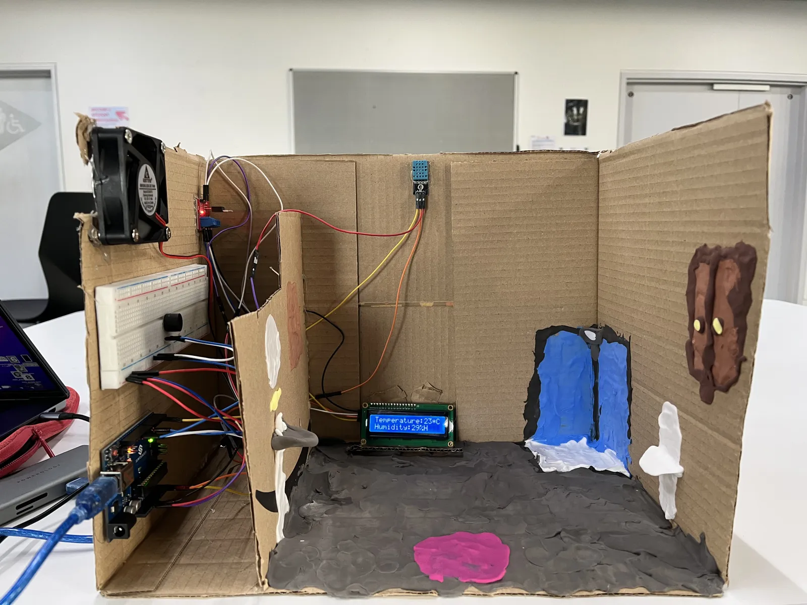
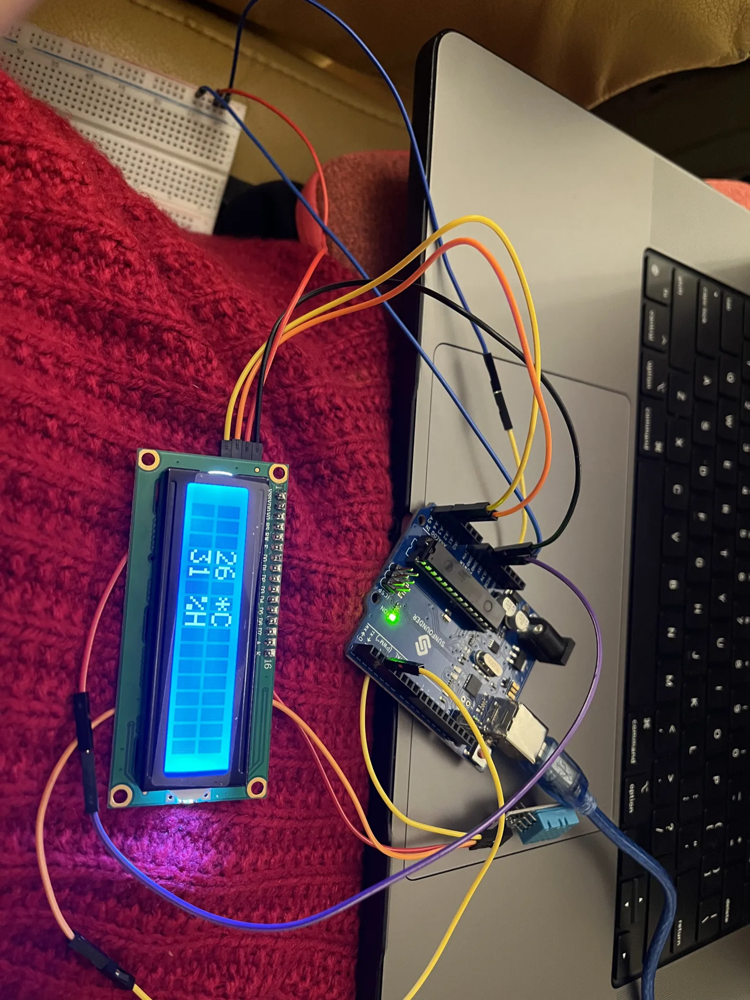
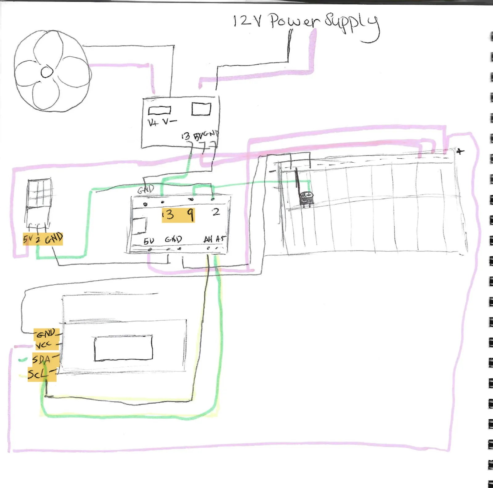
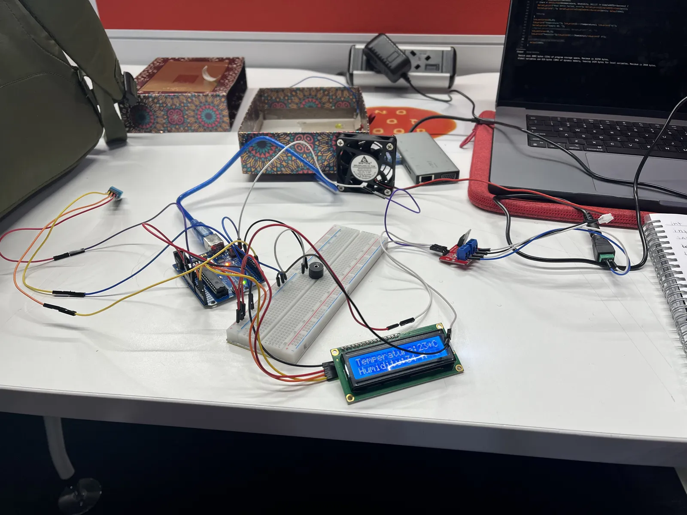
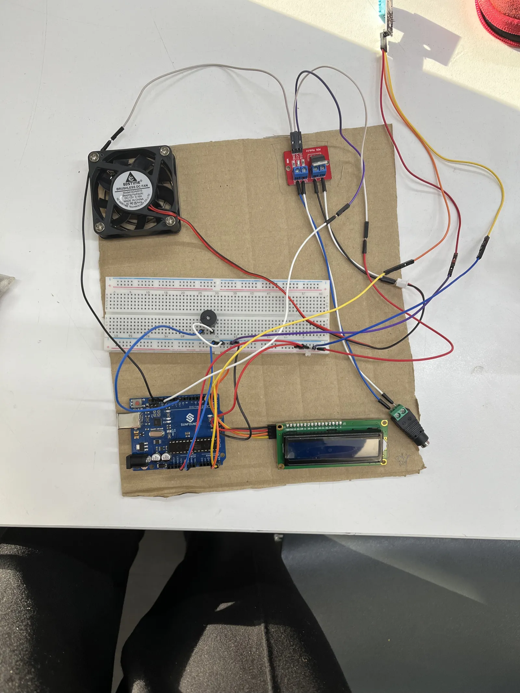
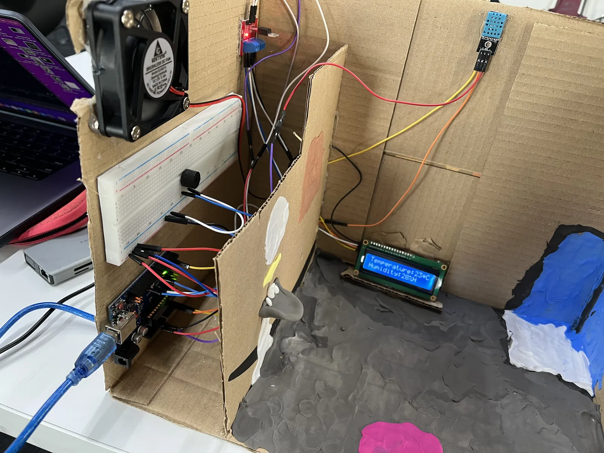
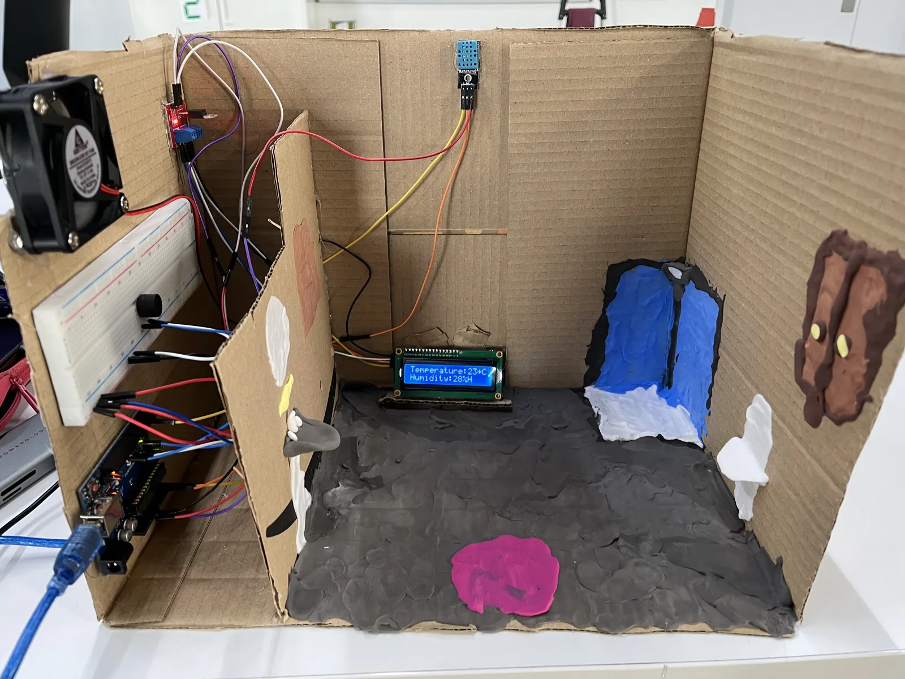

Arduino · sensing · physical prototyping
Automated Exhaust Fan
My bathroom had no ventilation, so moisture built up and mould was a risk. I built a low-cost Arduino system that watches humidity and temperature, switches on a fan and sounds an alert when levels get too high, and shows live readings on an LCD.

A damp bathroom
My bathroom lacked ventilation, which led to moisture build-up and a risk of mould. The exhaust fans I could buy were either manual or expensive.
Goal: a low-cost, automated system that would:
- Detect spikes in humidity and temperature.
- Switch on an exhaust fan and sound an alert.
- Show the readings in real time.
DHT11
Measures humidity and temperature.
MOSFET + fan
Switches the fan on when readings are too high.
I²C LCD
Displays live temperature and humidity.
Piezo buzzer
Two alert levels: low and high severity.
Research and prototyping
Learning from existing work
I adapted LIMPINGLIM's Humidity-Controlled Fan from Arduino Project Hub and expanded it with an LCD display (following SunFounder tutorials) and a buzzer (from what I'd done in class). I combined online resources with my own additions.
Hardware hurdles
Problem: the original schematic used an Arduino Nano, but I had an Uno. Solution: I redesigned the circuit:
- Moved the DHT11 to pin 2.
- Used the breadboard to distribute 5V.
- Added a MOSFET to control the 12V fan.



Test 3: the fan switching on under temperature control.
Iterating on the code
I²C address conflicts
The LCD wouldn't show anything at first. I fixed it by testing both 0x27 and 0x3F and using the LiquidCrystal_I2C library.
Unreliable readings
The DHT11 readings were unreliable at first, so I switched to the SimpleDHT library, which made them stable.
Final logic
void loop() { byte temp, humidity; dht11.read(pinDHT11, &temp, &humidity, NULL); lcd.print("Temp:"); lcd.print((int)temp); lcd.print("Hum:"); lcd.print((int)humidity); if (temp > 40) { digitalWrite(Fan, HIGH); tone(buzzer, 2000); // High-pitched alert } }
Physical assembly
Design goals
- A minimal housing with the wires hidden.
- The sensor placed near the shower so readings are accurate.
Process
- Mock-up: a cardboard prototype.
- Final build: an air-dry clay "bathroom" facade, with the components mounted on foam board.



Testing and validation
| Test | How |
|---|---|
| Fan activation | Used a hairdryer to simulate temperature spikes |
| Buzzer tones | Tested frequencies: 100 Hz for low alerts, 2000 Hz for high alerts |
| LCD readability | Checked under different lighting conditions |
Unexpected issue: debris from the clay got into the sensor and interfered with the readings. Cleaning the sensor fixed it.
See it running
A demonstration of the working system.
What I learned
This project turned a personal annoyance into something that works: the system now runs in my bathroom. It improved my circuit design (MOSFETs, I²C), sensor integration (DHT11 calibration) and rapid prototyping (clay and cardboard).
Nano to Uno
Switching boards meant rethinking the wiring.
Serial Monitor
It was essential for tracking down sensor errors.
Class critiques
Feedback from class is why I added the LCD, which wasn't in the original plan.
Future improvements
- Visual alerts: an RGB LED to show humidity levels at a glance.
- Energy efficiency: replace the 12V fan with a 5V USB fan.
- Cloud logging: send data to an IoT service (e.g. Blynk) to see long-term trends.